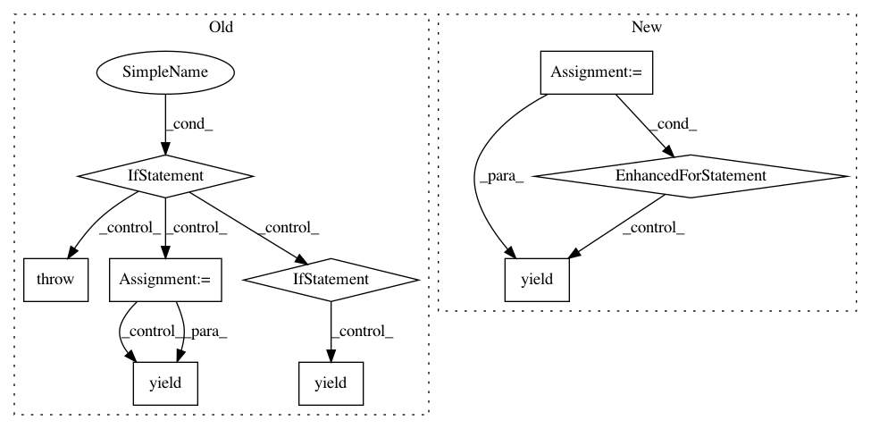

991b6233b442369be2310ca58fbd7c4b93f72c89,src/python/pants/backend/core/tasks/what_changed.py,WhatChanged,console_output,#WhatChanged#Any#,37
Before Change
self._owning_targets = defaultdict(set)
def console_output(self, _):
if not self._workspace:
raise TaskError("No workspace provided.")
touched_files = self._get_touched_files()
if self._show_files:
for path in touched_files:
yield path
else:
touched_targets = set()
for path in touched_files:
self._load_build_files(path)
self._compute_owning_targets()
for path in touched_files:
for touched_target in self._owning_targets[path]:
if touched_target not in touched_targets:
touched_targets.add(touched_target)
yield touched_target.address.spec
def _get_touched_files(self):
try:
return self._workspace.touched_files(self._parent)
except Workspace.WorkspaceError as e:
After Change
for f in sorted(self._changed_files()):
yield f
else:
for addr in sorted(self._changed_targets()):
yield addr.spec
In pattern: SUPERPATTERN
Frequency: 3
Non-data size: 9
Instances
Project Name: pantsbuild/pants
Commit Name: 991b6233b442369be2310ca58fbd7c4b93f72c89
Time: 2014-12-23
Author: tinystatemachine@gmail.com
File Name: src/python/pants/backend/core/tasks/what_changed.py
Class Name: WhatChanged
Method Name: console_output
Project Name: pantsbuild/pants
Commit Name: 91cdde2ef79e87a9cb0d80cb55769bc23dc271cc
Time: 2014-08-19
Author: john.sirois@gmail.com
File Name: src/python/pants/backend/jvm/tasks/dependencies.py
Class Name: Dependencies
Method Name: console_output
Project Name: biocore/scikit-bio
Commit Name: e17cfdf50ab43846175416f0d8f9032a4d4a6f6e
Time: 2014-03-24
Author: mcdonadt@colorado.edu
File Name: skbio/core/tree.py
Class Name: TreeNode
Method Name: tips